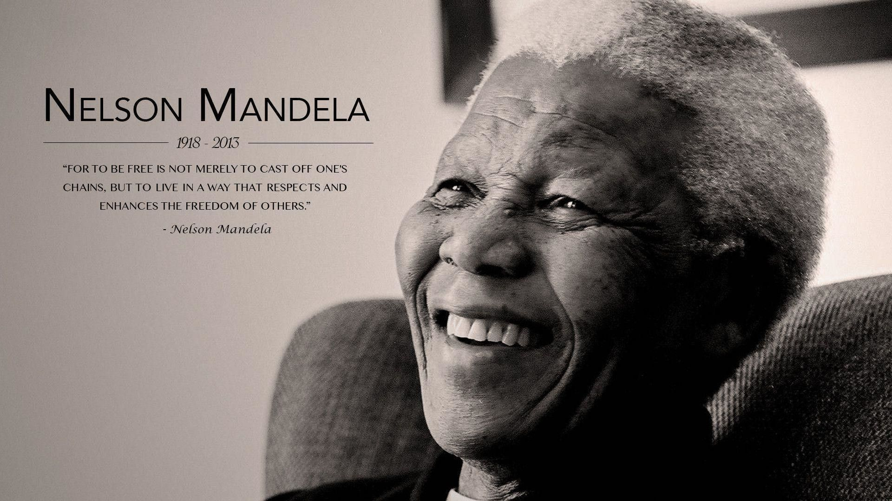

<!DOCTYPE html>

<html>
<head>
	<meta charset='utf-8'>
	<title>Tribute</title>
	<link rel='stylesheet' href='tribute.css'>
</head>


<body>
	<main id='main'>
		<!--Should contain all other elements-->

		<h1 id='title'>Nelson Mandela</h1>
		<div id='img-div'>
			
			<p id='img-caption'>Image of Nelson Mandela</p>
		</div>

		<p id = 'tribute-info'>
			South African statesman and president (1994-99). Born 
Rolihlahla Mandela on July 18, 1918 in Transkei, South Africa. 
Mandela's father had four wives and Mandela's mother, 
Nosekeni Fanny, was the third. His father died when Mandela 
was nine years-old and he is taken in by a high ranking chief who 
provides him with an education for the civil service. It is in college 
where Mandela develops a nationalist position and begins to 
advocate for black African rights. He is arrested and imprisoned 
for twenty-seven years. In time, as the white South African 
government reeled under international political pressure, 
Mandela was released and commenced working with the South 
African white government to transition to black majority rule and 
away from apartheid. At age 77, Mandela was elected President of South Africa, serving only one term. He has since then 
spent his life promoting equality and world peace in many parts of the world.
There was little in Nelson Mandela's early life to indicate that he would become a leader of an independence 
movement and eventually president of his country. He was born Rolihlahla Mandela in rural South Africa in the tiny village 
of Mvezo, on the banks of the Mbashe River in the province of Transkei. "Rolihlahla" in the language of Xhosa literally 
means "pulling the branch of a tree," but more commonly means "troublemaker." 
His father was destined to be a chief and for years served as a counselor to tribal chiefs. But over a dispute with 
the local colonial magistrate, he lost his title and his fortune. Rolihlahla was only an infant at the time and the loss of status 
forced his mother to move the family to Qunu, an even smaller village north of Mvezo. The village was nestled in a narrow 
grassy valley. There were no roads, only foot paths that linked the pastures where livestock grazed. The family lived in huts
and ate a local harvest of maize, sorghum, pumpkin, and beans, which was all the family could afford. Water came from 
springs and streams and cooking was done outdoors. Nelson played the games of young boys, acting out male rights-of -
passage scenarios with toys he made himself from the natural materials available, tree branches and clay. 
At the suggestion of one of Rolihlahla's father's friends, he was baptized into the Methodist church and became 
the first in his family to attend school. As was the custom at the time, and probably due to the bias of the British 
educational system in South Africa, his teacher told him that his new first name would be "Nelson." 
Nelson Mandela's father died of lung disease when Nelson was nine years old. From that point, his life changed 
dramatically. He was adopted by Chief Jongintaba Dalindyebo, the acting regent of the Thembu people. This gesture was 
done as a favor to Nelson's father who, years earlier, had recommended Jongintaba be made chief. Nelson left the carefree 
life he knew in Qunu, fearing he would never see is village again. He traveled by motorcar to Mqhekezweni, the provincial 
capital of Thembuland, to the chief's royal residence. Though he had not forgotten his beloved village of Qunu, he quickly 
adopted to the new, more sophisticated surroundings of Mqhekezweni. 
Mandela was given the same status and responsibilities as the regent's two other children, son Justice, the oldest 
and Nomafu, the regent's daughter. Mandela took classes in a one-room school next to the palace, studying English, Xhosa, 
history, and geography. It was during this period that Mandela developed his interest in African history from elder chiefs 
who came to the Great Palace on official business. He heard of how the African people had lived in relative peace until the 
coming of the white people. Before then, the elders said, the children of southern Africa lived as brothers, but the white 
man shattered this fellowship. The black man shared the land, the air, and the water with the white man, but the white 
man took all this for himself. 
Nelson Mandela And Oprah Winfrey
Nelson Mandela with Oprah Winfrey after 
they don construction hard hats to break 
the ground for her $10 million Leadership 
Academy for Girls in South Africa. She 
described Mandela as her 'hero' and he 
called her a 'queen.' -- 2002
nelson mandela biography.docx Page 2 of 4
When Mandela was sixteen, it was time for him to partake in the circumcision ritual that would carry him into 
manhood. The ceremony of circumcision was not just a surgical procedure, but an elaborate ritual in preparation for 
manhood. In the African tradition, an uncircumcised male could not inherit his father's wealth, marry or officiate at tribal 
rituals. Mandela participated in the ceremony with twenty-five other boys. He welcomed the opportunity to partake in his 
people's customs and felt ready to make the transition from boyhood to manhood. But during the proceedings, Chief 
Meligqili, the main speaker at the ceremony, spoke sadly of the young men as a generation enslaved in their own country. 
Because their land was under the control of the white man, they would never have the power to govern themselves. The 
chief went on to lament that the promise of the young men would be squandered as they struggled to make a living and 
perform mindless chores for the white man. Mandela would later say that that the chief's words didn't make total sense to 
him at the time, but they would work on him and would eventually formulate his resolve for an independent South Africa. 
From the time Mandela came under the guardianship of the Regent Jongintaba, he was groomed to assume high 
office, though not as a chief, but as a counselor to one. As Thembu royalty, Nelson attended Wesleyan mission school, 
Clarkebury Boarding Institute and Wesleyan College. There he found interest and success in his academic studies through 
"plain hard work." He also excelled in track and later boxing. At first, he is mocked as a "country boy," but eventually makes 
friends with several classmates, including Mathona, his first female friend. 
In 1939, Nelson Mandela enrolled at the University College of Fort Hare, the only residential center of higher 
learning for blacks in South Africa. Fort Hare was considered Africa's equivalent of Oxford or Harvard, drawing scholars from
all parts of sub-Sahara Africa. In his first year, Mandela took the required courses, but focused on Roman Dutch law to 
prepare for a career in civil service as an interpreter or clerk, the best profession a black man could obtain.
In his second year, he was elected to the Student Representative Council (SRC). For some time students had been 
dissatisfied with the food and lack of power held by the SRC. During this election, a majority of students voted to boycott 
unless their demands were met. Mandela aligned with the majority of the students and resigned his position. Seeing this as 
an act of insubordination, the university's Dr. Kerr expelled Mandela for the rest of the year, telling him he could come back 
when he agreed to serve on the SRC. When Mandela returned home, the regent was furious and told him unequivocally he 
would recant his decision and go back to school in the fall. 
A few weeks after Mandela arrival at home, Regent Jongintaba announced he had arranged a marriage for him. 
The regent was within his right as tribal custom dictated and wanted to make sure Mandela's life was set during the 
regent's lifetime. Mandela was shocked and felt trapped. Believing he had no other option, he ran away to Johannesburg, 
where he worked in a variety of jobs, including guard and clerk, while completing his bachelor's degree via correspondence 
courses. He then enrolled at the University of Witwatersrand to study law. He became actively involved in the antiapartheid movement and joined the African National Congress (ANC) in 1942.
Within the ANC, a small group of young Africans banded together calling themselves the African National Congress 
Youth League. Their goal was to transform the ANC into a mass grassroots movement, deriving strength from millions of 
rural peasants and working people who had no voice under the current regime. Specifically, the group believed that the 
ANC's old tactics of polite petitioning were ineffective. In 1949, the ANC officially adopted the Youth League's methods of 
boycott, strike, civil disobedience and non-cooperation with policy goals of full citizenship, redistribution of land, trade 
union rights, and free and compulsory education for all children.
For 20 years, Mandela directed a campaign of peaceful, non-violent defiance against the South African government 
and its racist policies, including the 1952 Defiance Campaign and the 1955 Congress of the People. He founded the law firm 
Mandela and Tambo, partnering with Oliver Tambo, a brilliant student he had earlier met at Fort Hare. The law firm 
provided free and low-cost legal counsel to unrepresented blacks.
In 1956, Mandela and 150 others were arrested and charged with treason for their political advocacy, though they 
were eventually acquitted. Meanwhile, the ANC was being challenged by the Africanists, a new breed of Black activists who 
believed that the pacifist method of the ANC was ineffective. By 1959, the ANC lost much of its militant support when the 
Africanists broke away to form the Pan-Africanist Congress.
In 1961, Mandela, who was formerly committed to non-violent protest, began to believe that armed struggle was
the only way to achieve change. He co-founded Umkhonto we Sizwe, also known as MK, an armed offshoot of the ANC 
dedicated to sabotage and guerilla war tactics to end apartheid. He orchestrated a three-day national workers strike in 
1961 for which he was arrested in 1962. He was sentenced to five years in prison for the strike, and then brought to trial 
again in 1963. This time, he and 10 other ANC leaders were sentenced to life imprisonment for political offenses, including 
sabotage.
nelson mandela biography.docx Page 3 of 4
Nelson Mandela was imprisoned on Robben Island for 18 of his 27 years in prison. As a black political prisoner, he 
received the lowest level of treatment. However, he was able to earn a Bachelor of Law degree through a University of 
London correspondence program while incarcerated. A 1981 memoir by South African intelligence agent Gordon Winter 
described a plot by the South African government to arrange for Mandela's escape so as to shoot him during the recapture. 
The plot, was foiled by British intelligence, Mandela continued to be such a potent symbol of black resistance that a 
coordinated international campaign for his release was launched. This international groundswell of support exemplified the 
power and esteem Mandela had in the global political community.
In 1982, Mandela and other ANC leaders were moved to Pollsmoor Prison, allegedly to enable contact between 
them and the South African government. In 1985, President P.W. Botha offered Mandela's release in exchange for 
renouncing armed struggle; the prisoner flatly rejected the offer. With increasing local and international pressure for his 
release, the government participated in several talks with Mandela over the years, but no deal was made. It wasn't until 
Botha suffered a stroke and was replaced by Frederik Willem de Klerk that Mandela's release was announced in February 
1990. De Klerk unbanned the ANC, removed restrictions on political groups, and suspended executions.
Upon his release, Mandela immediately urged foreign powers not to reduce their pressure on the South African 
government for constitutional reform. While he stated his commitment to work toward peace, he declared that the ANC's 
armed struggle would continue until the black majority received the right to vote.
Mandela was elected president of the African National Congress in 1991 with lifelong friend and colleague, Oliver 
Tambo, serving as National Chairperson. Mandela continued to negotiate with President F.W. de Klerk toward the country's 
first multi-racial elections. White South Africans were willing to share power, but many black South Africans wanted a 
complete transfer of power. The negotiations were often strained and news of violent eruptions, including the 
assassination of ANC leader Chris Hani, continued throughout the country. Mandela had to keep a delicate balance of 
political pressure and intense negotiations amid the demonstrations and armed resistance. 
Negotiation prevailed, however, and on April 27, 1994, South Africa held its first democratic elections. At age 77, 
Nelson Mandela was inaugurated as the country's first black president on May 10, 1994, with de Klerk as his first deputy. In 
1993, Mandela shared the Nobel Prize for Peace with de Klerk for their work towards dismantling apartheid and in 1995 he 
was awarded the Order of Merit. In 1994, Mandela published his autobiography, Long Walk to Freedom, much of which he 
had secretly written while in prison. 
From 1994 until June 1999, Mandela worked to bring about the transition from minority rule and apartheid to 
black majority rule. He used the nation's enthusiasm for sports as a pivot point to promote reconciliation between whites 
and blacks, encouraging black South Africans to support the once hated South African national rugby team. In 1995, South 
Africa came on the world stage by hosting the Rugby World Cup, which brought further recognition and prestige to the 
young republic.
During his presidency, Mandela also worked to protect South Africa's economy from collapse and was officially 
launched South Africa's government. Through his Reconstruction and Development Plan, he had the government funding 
the creation of jobs, housing, and basic health care. In 1996, he signed into law the new South African constitution, which 
established a strong central government based on majority rule and guaranteed rights of minorities and freedom of 
expression. 
Mandela retired from active politics at the 1999 general election but maintained a busy schedule, raising money 
for his Mandela Foundation to build schools and clinics in South Africa's rural heartland and serving as a mediator in 
Burundi's civil war. He also published a number of books on his life and struggle, among them, No Easy Walk to Freedom, 
Nelson Mandela: The Struggle is my Life, and Nelson Mandela's Favorite African Folktales. He was diagnosed and treated for 
prostate cancer in 2001 and in June 2004, at age 85, he announced his formal retirement from public life and returned to 
his native village of Qunu.
On July 18, 2007, Mandela convened a group of world leaders, including Graca Machel, Desmond Tutu, Kofi Annan, 
Ela Bhatt, Gro Harlem Brundtland, Jimmy Carter, Li Zhaoxing, Mary Robinson and Muhammad Yunus to address the world's 
toughest issues. Named "The Elders," the group is committed to working publicly and privately to find solutions to problems 

		</p>
		<div>
			<a id='tribute-link' href='#' target='_blank'>External info</a>
		</div>

	</main>
</body>

</html>